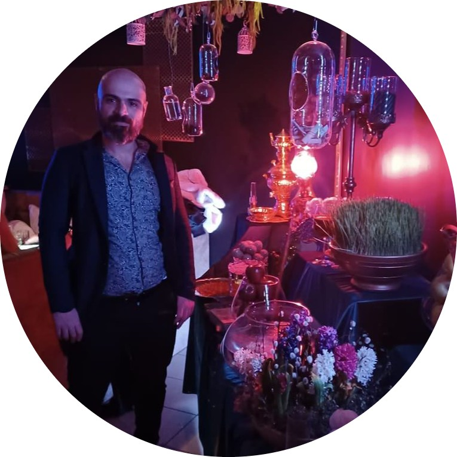

|  |
Mazdak MohammadiLäs mer om mina Arbetslivserfarenheter och utbildningar. |
Inledningsvis skulle tacka er för att ni läser min artikel som handlar om mina upplevelser omkring IT och de utmannigarna som förhindrade mig för att inte följa mina intress.
Chapter I. Sammanfatning
Chapter II. utmannigar
Chapter III.Mitt hemland Iran och IT
Chapter IV.Sverige och IT
Chapter V. Utmaningar
Chapter VI. Varför IT
Chapter VII.Programering
Virtualisering
Webbutveckling
Avslutningsvis
När det var dags att välja en utbildning på gymnasyet i Iran hade jag ingen anning om att vilken utbildning sulle jag ta. Det fanns inte yrkesvägleddare som kunde hjlpa mig att följa min intresse. Min yrkessvägledare var min far. Han rekomenderade att jag borde ta en utbldning som heter Lagar elekteriska maskinen. Ja tyckte att den hade ett jättekul namn så jag tog den här.Efter några månader vblev jag trött på lektioner. Jag var omedveten omkring problemet.Jag kunde inte klara praktiska uppgifter.Efter att jag fick ett dåligt betyg för teori och praktik från gymnasiet ansökte jag till universitet där jag fick samma problem.Men jag hade ett ämne som heter IT användare på EL.Då kännde jag att det är min greje. jag kalarade provet exempelariskt. Plus att jag skrev programering till mina kompisar och fick pengar. Jag mådde bra faktiskt när jag var på kurs IT anvndare på EL. Jag fick bästa betyget bara för det här ämnet.